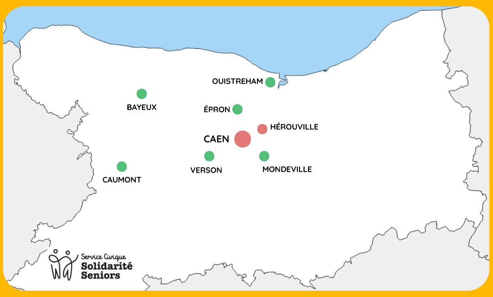

Le Service Civique Solidarité Séniors, c'est quoi ?
Qu'est ce qu'on propose ?
- Visites de convivialité à domicile gratuites
- → Discuter ensemble
- → Jeux de société
- → Activités manuelles
- → Balades
- → Aide numérique
- Activités collectives
Quand ?
- Du mardi au jeudi
- Jusqu'en juin 2026 (reprise en novembre 2026)
Où ?

Nous contacter :
- Pour les communes de Caen et Hérouville :
- Marie ndf
- n°tel
- Pour les communes de Bayeux, Caumont, Épron, Mondeville, Ouistreham et Verson :
- Claudia Verdun
- 07 67 04 50 71
Plus d'informations sur Unis-Cité :
Adresse : 11 Rue Molière, 14000 Caen
Pour accéder au site web officiel d'Unis-Cité, cliquez ici.